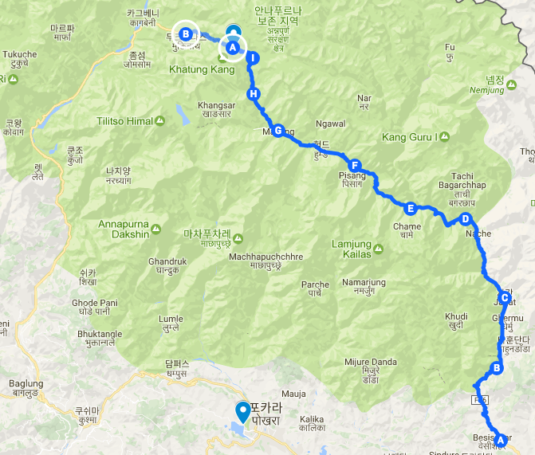
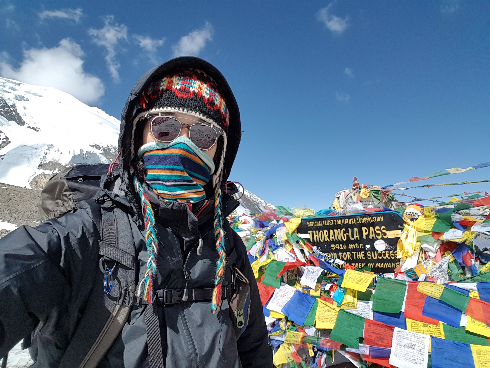
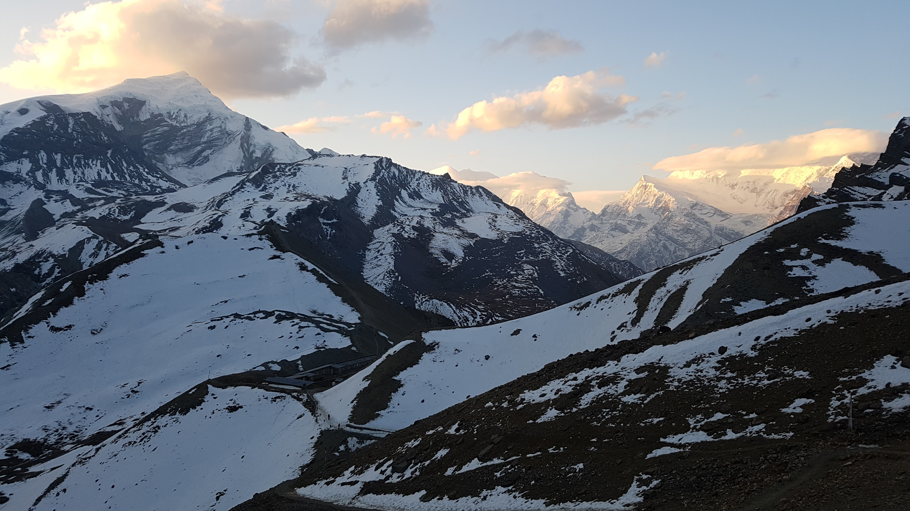
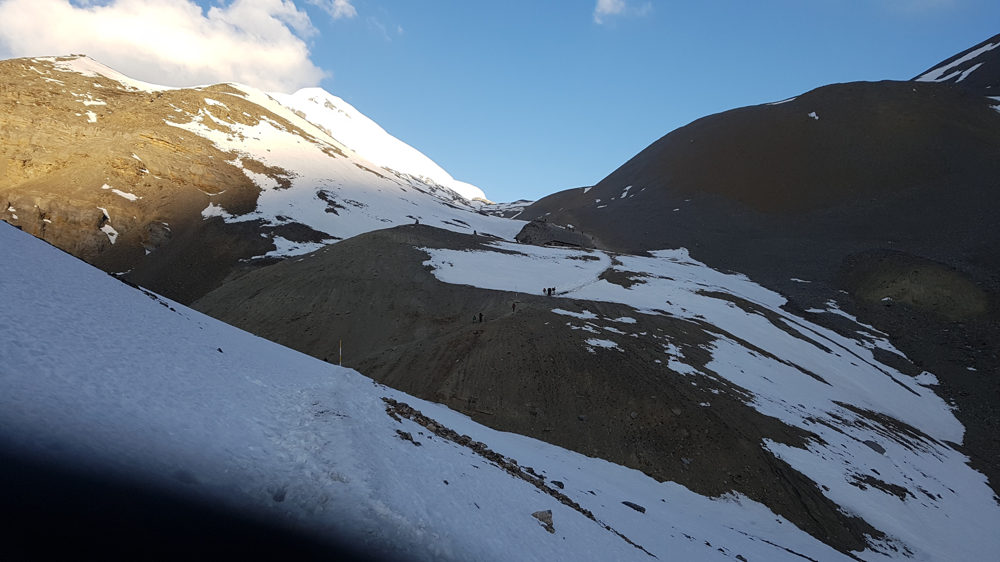
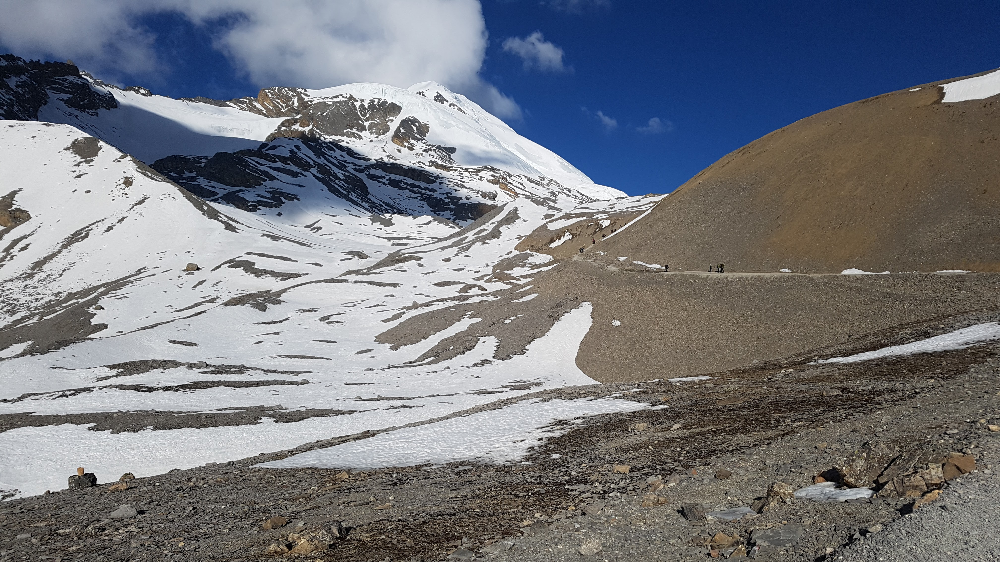
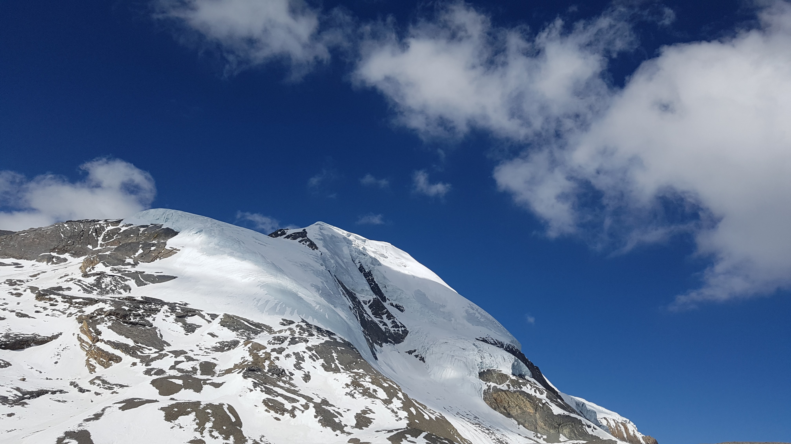

layout: post
title: 5416미터, 생애 최고 높이와 최악의 고통.
subtitle: "여행 D+18, 안나푸르나 D+10"
date: 2017-04-21 12:00:10
tags: 포스팅
header-img: img/post-travel-18.jpg
오늘 이동한 경로 (I) -> (A) -> (B) (총 16km)
Thorang Phedi(4450) -> High camp (4850) -> Thoroung-La Pass(5416) -> muktinath(3800)

오늘 드디어 쏘롱라 패스를 넘는날이다. 어제 300미터 더 올라가 보기도 하고 연습을 조금 했는데도 오늘 잘할수 있을지 확신이 없었다. 사실 어제 올라간 언덕만해도 정말 가파랐기 때문이다. 새벽 3시30분에 일어났다. 쏘롱라 패스를 넘을때는 엄청 일찍일어나야 한다. 최대한 빨리넘어야 하산길에 녹은눈에 미끄러지지 않을 수 있다. 안전을 위해서이다.
완전 깜깜한 밤에 45도 이상의 경사를 가진 언덕을 오르는데 가이드 없이 혼자 갔었으면 큰일날 뻔했다는 생각이 들었다. 길이 전혀 보이지 않았다. 어제 짐을 많이 줄여서 오늘 아마 12kg정도의 짐을 메고 올랐을 것이다. 시작부터 무거워서 한발한발 옮기는데 쉽지 않았다. 게다가 고도가 높아서 산소 농도가 부족하다. (50%) 그래서 더 힘들었다.
걷고 또 걸었다. 나름 산행에 자신이 있다고 생각했는데 틀렸다. 나랑 비슷한 무게의 짐을 메고 내 옆을 쑥쑥 지나가는 애들이 수두룩하다. 타쿠어와 패트릭은 이미 놓친지 오래다. L선생님도 가는길에 만났는데 이미 앞서 가셨다. 혼자 계속 걸었다.
4200미터부터 5400미터까지 12kg의 무게를 메고 산소도 부족한상태로 오르는게 정말 힘들었다. 산소가 부족해서 머리도 띵하다. 호흡도 무척 거칠게 해야한다. 그래야 그나마 산소를 섭취할 수 있다. 오르고 올라도 쏘롱라에 도착할 기미가 보이지 않았다. 확실히 높은곳에 올라오니 온통 설산천지라 멋지긴 했다. 그러나 나는 사진찍을 힘도 없었다. 오로지 쏘롱패스를 빨리 넘고싶다는 생각밖에 없었다.
이 산에서 내가 제일 느리다. 다들 어떻게 그리 잘 올라가는지 나를 쑥쑥 지나쳐 간다. 내 체력에 무슨 문제가 있는건지 자괴감이 든다. 걷다 쉬다를 계속 반복했다. 상상할 수 없을정도로 천천히 올라야 그나마 오를 수 있었다. 내 생에 이렇게 육체적으로 힘든경험은 처음 이었다.
올라가는 길에 계속 얼마나 남았는지 물어보고 그들이 말하는 시간이 분명 지났는데도 쏘롱라에 도착할 기미가 보이지 않는다. 그러다가 조그마낳게 오색깃발이 보였다! 저기로구나!! 그런데 그 눈앞에 있는 깃발까지 가는데도 한참이 걸렸다.
드디어 도착했다. 일단 간판에서 셀카를 한장 찍었다. 먼저 도착해계신 L선생님이 커피를 한잔 사주셨다. 가방을 벗고 구석에 앉아서 커피를 마시며 쏘롱라 패스 표지판을 보는데 울음이 터졌다. 내가 결국 해냈구나. 세상에 태어나서 이렇게 육체적으로 힘든적이 없었던것 같다. 여러가지 복합적인 감정이 복받쳤다. 체력이 딸려서 그랬는지 누구보다 힘들게 이 언덕을 넘었던 만큼 그 감동은 내게 더 크게 다가왔던것 같다.

안나푸르나가 우리같은 일반인에게 허락한 최고 고도인 쏘롱라 패스를 넘고 L선생님과 나는 묵티나트로 하산을 시작했다. L 선생님과 내려오면서 수많은 인문학 이야기를 했다. 논술 강사를 30년하신 선생님이 나같은 공돌이 처음본다고 해주셔서 무척 기분이 좋았지만 책몇권 읽은것 가지고 떠든것 뿐인데 부끄러웠다.
그때 했던 대화들을 떠올려 보면 언어와 사고와의 관계, 언론이 나아가야할 방향에 대하여, 환경의 변화와 체감인생, 니체, 실존주의, 에리히프롬, 신영복 강의, 역사란 무엇인가, 내가 가진 제품에대한 철학 (도구 만드는 사람), 과학은 객관적이고 절대적인지 주관적인지, 그리고 양자역학과 인공지능 까지 별의별 주제로 토론하고 대화 했다.
묵티나트로 가는 하산길은 너무너무 힘들었다. 1600m를 한번에 내려온다. 무거운 짐을 메고 가파른 하산길을 간다는것은 오르는것보다 육체적으로 더 큰 부담을 느끼게 하는것 같다. 특히 무릎이 조금씩 아파왔다. 그동안 아무문제 없던 내 몸이 드디어 망가지기 시작한건가? 처음부터 무릎걱정이 되서 보호대도 착용하고 테이핑도하고 별짓을 다했는데 그래도 무릎에 무리가 온것 같다.
오랜 시간이 걸려 도착한 묵티나트는 거대한 도시 였다. 지금까지 만난 마을중에 가장 컷다. 그곳에서 패트릭과 타쿠어를 다시 만났다. 숙소도 같은곳에 묶었다. 숙소가 엄청 훌룽한 호텔이었다. 가격이 800루피나 했다. 침대도 퀸사이즈! 오늘은 오랫만에 편한곳에서 푹 쉴수 있을것 같았다.
L선생님과 한국식당에서 삼겹살을 먹었다. 오랫만에 먹는 삼겹살이 기가막혔다. 이 맛있는 부위를 외국인들은 왜 구워먹지 않는걸까? 앞에는 어제 하이캠프에서 만났던 네덜란드애가 앉아있었다. 모두 쏘롱라패스를 넘고 묵티나트에서 무사히 만나니 반가웠다. 오늘은 다들 축제같은 분위기다. 모르는 사람끼리도 서로 고생했다며 칭찬을 해준다.
네덜란드 청년이 네팔애 대해 설명해준다. 그는 네팔에서 6개월을 살고 다시 고향에 갔다가 적응을 하는데 1년이 걸렸다고 한다. 그리고 이번에 다시 이곳에 와서 네팔리 친구와 함께 안나푸르나를 트레킹 하는 중이었다. 나는 카트만두가 먼지많고 사람도많고 너무 싫었다고 말했는데, 그는 오히려 그것이 카트만두의 진짜 매력이라면서 본인은 그것이 너무 좋았다고 한다. 이 친구가 진짜 여행자의 삶을 살고 있구나, 부끄러웠다.
낮선 여행자들과의 대화는 언제나 내가 가진 생각에 얼마나 많은 고정관념이 개입되어 있는지 깨닫게 해준다. 그리고 생각을 강요하지 않는 법을 알게 된다. 생각을 강요한다는것은 공감받고 싶은 욕망이 만들어냈을 것이다. 카트만두는 먼지가 많고 시끄럽고 지저분해서 좋지 않아, 그렇지? 너도 그렇게 생각해야해. 라는 생각을 상대방에게 강요하게 된다. 나는 모든 사람이 다른 생각을 가지고 있다는것과 그들 나름의 의견을 존중하지 않았던 것이다.
쏘롱라 패스를 넘으면서 만났던 경치



